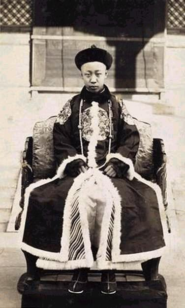

Mùa hè năm 1908, Từ Hi Thái Hậu lâm bệnh nặng. Con người đã cai trị cả một đế quốc, biết rằng bây giờ đã đến lúc phải thua mệnh trời. Nhưng Từ Hi nhất quyết không để vua Quang Tự được chết sau mình. Mùa thu năm ấy, Từ Hi ngã bệnh lần thứ hai. Bà Thái Hậu già 77 tuổi bị bệnh kiết lỵ, và trong suốt thời gian nằm liệt giường, Từ Hi sắp đặt việc kế vị ngai vàng nhà Mãn Thanh.

Hoàng đế Phổ Nghi
Vào một đêm tối ngày 13 tháng 11 năm 1908, sứ giả của triều đình tới gõ cửa nhà Thuần Thân Vương tại Bắc Kinh. Sứ giả đến truyền lệnh sau đây của Từ Hi: Phổ Nghi, đứa con trai mới 3 tuổi của Thuần Thân Vương, phải vào Cấm Thành ngay. Tấm ngự chiếu viết bằng mực son trên một tấm lụa màu vàng ấy đã làm cả nhà Thuần Thân Vương kinh hoàng. Bà nội của Phổ Nghi ngất xỉu sau khi nghe đọc xong ngự chiếu của Từ Hi. Thuần Thân Vương thì hoang mang không hiểu gì cả.
Phổ Nghi đang ngủ, bỗng bị đánh thức dậy, nên gào thét vùng vẫy chống lại các thái giám và các đầy tớ gái đang cố gắng mặc quần áo mới cho Phổ Nghi, để làm một chuyến đi vào lịch sử. Sử sách chép lại rằng Phổ Nghi kháng cự lại sắc lệnh của Từ Hi, nhưng thực ra đấy chỉ là phản ứng tất nhiên của một đứa trẻ ba tuổi bị đánh thức dậy, và thấy có nhiều người lạ chung quanh. Dĩ nhiên đứa bé ba tuổi này không hiểu rằng cơn giận nửa đêm đầu tiên ấy là khởi đầu cho một cuộc tranh đấu kéo dài suốt một cuộc đời, chống lại những may rủi của số mệnh. Thuần Thân Vương đi theo Phổ Nghi vào Cấm Thành.
Sau này Phổ Nghi kể lại lần gặp gỡ với bà Thái Hậu già nua, bệnh hoạn và gầy ốm như sau:
“Sự xúc động của cuộc hội kiến để lại một ấn tượng sâu xa trong ký ức tôi. Tôi nhớ rằng bỗng nhiên tôi thấy chung quanh đầy người lạ, và qua một tấm màn mỏng mầu xám trước mặt, tôi có thể trông thấy bộ mặt gầy guộc của một bà già, trông thật gớm ghiếc. Tôi la hét lên vì sợ hãi. Bà Thái Hậu dịu dàng sai thái giám đem kẹo cho tôi ăn. Nhưng tôi cáu kỉnh liệng kẹo xuống đất. Bằng một giọng mệt mỏi, bà Thái Hậu than: “Thằng bé này hư quá“ và sai thái giám dẫn tôi ra ngoài.”
Sau đó Từ Hi quay lại Thuần Thân Vương và cho biết ý định chọn Phổ Nghi lên ngôi báu. Ngay ngày hôm sau, vua Quang Tự bỗng mắc phải một chứng bệnh kỳ lạ. Người ta biết ngay không phải ngẫu nhiên mà Quang Tự mắc bệnh đúng vào lúc Từ Hi chọn Phổ Nghi lên thay thế. Mọi người đều đồng ý Quang Tự bị đầu độc. Chính Phổ Nghi cũng tin như vậy. Nhà vua cuối cùng của nhà Thanh nói về cái chết của vua Quang Tự:
“Sau này tôi được một số cận thần cho biết rằng trước khi băng hà, vua Quang Tự vẫn khoẻ mạnh và chỉ bị cảm sơ sài thôi. Mạch máu của nhà vua vẫn bình thường. Người ta trông thấy nhà vua đi lại và nói chuyện trong phòng như một người mạnh khoẻ. Vì thế mọi người rất đỗi ngạc nhiên khi nghe tin nhà vua bị bệnh trầm trọng. Một đều lạ nữa là nhà vua chết ngay, chỉ sau bốn giờ mắc bệnh. Quả thực cái chết của vua Quang Tự rất đáng nghi ngờ.”
Dĩ nhiên vua Quang Tự phải chết trước Từ Hi. Từ Hi không bao giờ cho phép một ông vua chống lại mình được sống sót, và có cơ hội trở lại ngôi vị Thiên Tử. Hai giờ sau khi vua Quang Tự chết rồi, Từ Hi Thái Hậu bắt đầu nhiếp chính lần thứ tư. Bà lại ban những sắc lệnh mới. Phổ Nghi được chỉ định lên ngôi Thiên Tử, Thuần Thân Vương được cử làm Nhiếp Chính, còn Từ Hi tự phong mình làm Đại Thái Hậu. Quả thực Từ Hi vẫn có ý định tiếp tục điều khiển vận mạng của đế quốc Trung Hoa cho tới hơi thở cuối cùng. Từ Hi phán với Thuần Thân Vương: “Nhà ngươi sẽ điều khiển quốc sự đúng theo mệnh lệnh của ta.”
Nhưng ngay đêm đó, sau những dồn dập của các biến cố cùng với hậu quả của bệnh tật, cộng với sự hối hận trong việc giết vua Quang Tự, bệnh của Từ Hi tái phát, và lần này có vẻ trầm trọng đến nỗi Từ Hi phải than thở với bày thái giám tâm phúc: “Sức khoẻ của ta nguy kịch lắm rồi. Ta sợ rằng ta không hồi phục được nữa.”
Nhận thấy không còn nhiều thì giờ nữa, Đại Thái Hậu Từ Hi liền sửa soạn ban sắc lệnh cuối cùng trong cuộc đời của bà. Từ Hi đọc bản sắc lệnh sau đây cho thái giám viết: “Nhìn lại năm mươi năm vừa qua, ta nhận thấy rằng những tai họa bên trong và những cuộc xâm lấn từ bên ngoài đã đến với chúng ta liên tục. Tân Thiên Tử chỉ là một ấu chúa, ta cầu nguyện ấu chúa sẽ chăm chỉ học hành và sẽ đóng góp thêm vào những công nghiệp vinh quang của các tiên đế. Việc tang lễ cho ta không được kéo dài quá hai mươi bảy ngày.”
Các thái giám sau đó mặc cho Từ Hi bộ áo choàng theo đúng tang lễ, trong khi đó Thuần Thân Vương và các đại thần chầu chực chung quanh giường Thái Hậu để nghe Từ Hi ban mệnh lệnh cuối cùng:
“Các ngươi đừng cho phép một người đàn bà được nắm quyền tối thượng quốc gia. Điều này trái với luật lệ của hoàng gia và phải cấm chỉ. Phải cẩn thận đừng để các thái giám can dự vào các vấn đề quốc sự, chính các thái giám đã làm sụp đổ ngai vàng nhà Minh, và đó là bài học cho người Mãn Thanh chúng ta.”
Đến đó Từ Hi chấm dứt vai trò lịch sử của bà. Một người đàn bà nắm quyền cai trị Trung Hoa lâu nhất trong lịch sử. Cuối cùng Từ Hi cũng học được một bài học mà các vị vua đầu tiên nhà Mãn Thanh đã biết cách đó gần ba thế kỷ, khi họ bắt đầu chiếm được Trung Hoa. Nhưng Từ Hi Thái Hậu nhận được bài học này quá trễ, vì đế quốc Trung Hoa đang suy tàn rồi và không hy vọng cứu vãn lại được nữa.
Tuy thế bản chất say mê quyền hành chính trị của Từ Hi khiến bà ngay lúc gần đất xa trời cũng vẫn còn thèm muốn quyền lực. Từ Hi thì thào căn dặn Thuần Thân Vương: “Trong tương lai, tất cả những vấn đề trọng đại nào cần phải có sự chỉ dẫn của Thái Hậu thì Thân Vương Nhiếp Chính phải thân đến trước Thái Hậu để thỉnh ý trước khi giải quyết.”
Nhưng ngay sau đó Từ Hi nhắm mắt lìa đời, để lại một nước Trung Hoa hỗn loạn với một Nhiếp Chính Thuần Thân Vương yếu kém. Cùng với cái chết của Từ Hi, triều đại Mãn Thanh cũng sắp đi vào chỗ cáo chung.
Một nhà ngoại giao Ý tham dự tang lễ của Từ Hi đã tả lại như sau:”Tang lễ của Từ Hi là một quang cảnh lộng lẫy và huy hoàng. Những người vác cờ mặc áo choàng màu đỏ, các vị sư Tây Tạng mặc áo choàng màu vàng. Người Trung Hoa dùng màu sắc của hoàng hôn cho tang lễ.”
Lăng tẩm của Từ Hi quả thực là một kho tàng chứa đựng những nữ trang và phẩm vật cực kỳ trân quý. Thân xác của bà được quấn tới chín lần bằng một chuổi những hạt ngọc; tấm áo choàng của bà được thêu chỉ bằng vàng và dồi những viên ngọc quý; rồi còn những tượng Phật khắc vào ngọc, kim cương, đá quý, ngọc ngà châu báu chất đầy trong quan tài của Thái Hậu. Ngôi mộ của Từ Hi cũng là một kho tàng chứa đựng những đồ sứ, đồ đồng rất quý hiếm, và những đồ trang sức bằng bạc và những thỏi vàng. Tấm khăn phủ người bà là một bông hoa mẫu đơn làm bằng ngọc, và trên cánh tay bà là những chiếc vòng làm theo hình thể một bông hoa cúc lớn và sáu cánh hoa mai nhỏ làm bằng những viên kim cương. Hai bàn tay bà đeo đầy nữ trang làm bằng ngọc bích. Hai chân bà đi đôi giầy làm bằng ngọc. Từ Hi Thái Hậu quả thực đã được quốc táng xứng đáng cho một người đã cai trị một phần tư nhân loại. Tuy nhiên những quý vật chôn theo Từ Hi đã khiến nhiều người có quyền lực sau này nổi máu tham, và vì thế lăng mộ bà đã bị đào lên, và các quý vật đã bị lấy đi.
Tại sao Từ Hi đặt một đứa trẻ mới có ba tuổi lên ngôi Hoàng Đế? Trong tập hồi ký xuất bản năm 1964 tại Bắc Kinh, Phổ Nghi đã viết: “Lý do Thái Hậu chọn tôi làm Hoàng Đế và thân phụ tôi làm Nhiếp Chính là vì bà biết rằng bà sắp chết đến nơi. Với tư cách là Đại Thái Hậu, Từ Hi không còn cai trị thay mặt cho một Hoàng Đế nữa, nhưng với một Nhiếp Chính hiền lành như thân phụ tôi và một Hoàng Đế còn ít tuổi thì Từ Hi vẫn có thể nắm quyền hành theo ý muốn của bà.”
Một lý do nữa là Từ Hi muốn bày tỏ lòng biết ơn với Vinh Lộc, người tình yêu dấu của bà, khi bà chọn cháu ngoại của Vinh Lộc lên ngôi báu. Từ Hi không những yêu Vinh Lộc mà còn chịu ơn nặng của Vinh Lộc nữa. Nếu không có Vinh Lộc thì bà đã bị loại ra khỏi chính trường, và có thể bị Túc Thuận và các thân vương trong Hội đồng Nhiếp chính giết chết từ nửa thế kỷ trước rồi. Bà cũng chủ tâm giữ ngai vàng Mãn Thanh cho gia tộc của bà và gia tộc Vinh Lộc. Ngoài ra Từ Hi cũng có thể nghĩ rằng khi chọn Phổ Nghi làm Hoàng Đế và Thuần Thân Vương làm Nhiếp Chính, bà cũng đã giải toả một món nợ máu với vua Quang Tự, vì Thuần Thân Vương là em ruột của vua Quang Tự, một người đã bị đầu độc chết, theo lệnh của bà.
Dù nguyên nhân nào khiến Từ Hi chọn Phổ Nghi thì hiển nhiên bà đã chọn Phổ Nghi ngay trước khi Phổ Nghi sinh ra đời. Trong khoảng năm 1905, vợ chồng Thuần Thân Vương thường được vào cung thăm Từ Hi, và Từ Hi đã để tâm chờ đợi một đứa con trai của vợ chồng Thuần Thân Vương. Khi Phổ Nghi lên ngôi, người ta vẫn hy vọng rằng triều đình Mãn Thanh và đế quốc Trung Hoa có hy vọng đứng vững. Cái chết của Từ Hi xảy ra đúng lúc bà vừa phát động một chương trình chín năm, nhằm khai thác cuộc cách mạng kỹ nghệ để phát triển đất nước và đưa Trung Hoa vào thế kỷ hai mươi.
Chương trình chín năm của Từ Hi Thái Hậu được phác họa như sau:
- Từ năm 1908 đến năm 1909: Tổ chức hội đồng hàng tỉnh.
- Từ năm 1909 đến năm 1910: Mở các trường tiểu học.
- Từ năm 1910 đến năm 1911: Tổ chức quốc dân đại hội.
- Từ năm 1911 đến năm 1912: Thành lập cơ quan kiểm soát ngân sách chính phủ.
- Từ năm 1912 đến năm 1913: Bầu cử quốc hội.
- Từ năm 1913 đến năm 1914: Cải cách luật lệ và sửa soạn ngân sách quốc gia.
- Từ năm 1915 đến năm 1916: Bãi bỏ sự phân chia giữa người Mãn Châu và người Hán Tộc.
- Từ năm 1916 đến năm 1917: Gia tăng số người biết đọc biết viết lên năm phần trăm.
Từ Hi Thái Hậu hy vọng rằng sự phát triển dân sinh và dân quyền sẽ tránh được cách mạng, rất bất lợi cho triều đình nhà Mãn Thanh. Sự canh tân ít nhất sẽ tăng cường sức mạnh của Trung Hoa để chống lại sự bao vây của ngoại bang. Nếu kế hoạch của Từ Hi được áp dụng thì Trung Hoa đã có thể vượt qua được giai đoạn chuyển tiếp khó khăn, từ một nền Quân Chủ Chuyên Chế sang một nền Quân Chủ Lập Hiến, từ những ảo mộng về hào quang của quá khứ tới cảnh thực tế hiện tại. Dần dà quan niệm chính quyền là công bộc của dân như Mạnh Tử đã thuyết giảng từ nhiều thế kỷ trước sẽ được áp dụng, và tránh cho quần chúng nỗi thống khổ của cảnh loạn lạc triền miên, khi các phe phái tranh giành quyền lực gây chiến với nhau.
Để cứu được triều đình Mãn Thanh và cũng để hướng dẫn đế quốc Trung Hoa qua giai đoạn chuyển tiếp, Trung Hoa cần có một nhà lãnh đạo tài ba.
Trong hoàn cảnh đất nước lâm nguy, sự lựa chọn Phổ Nghi của Từ Hi là một sai lầm sinh tử. Nhiếp Chính Thuần Thân Vương lại là một người không có kinh nghiệm chính trị, hay hoảng sợ và thiếu cương quyết, một người tầm thường không tham vọng, phải đứng ra gánh vác quốc gia đại sự. Thuần Thân Vương đã thật sự là một lạc lõng giữa những biến chuyển của dòng lịch sử, và không có khả năng ổn định được tình thế. Không những thế, Thuần Thân Vương còn bị kẹt giữa hai người đàn bà có quyền lực. Một người là tân Thái Hậu, nguyên là Hoàng Hậu của vua Quang Tự, một người do chính Từ Hi chọn cho Quang Tự, một người mà vua Quang Tự vừa ghét vừa sợ suốt đời. Người thứ hai chính là bà vợ của Thuần Thân Vương, nguyên là con gái của Vinh Lộc. Trong khi đó các cường quốc như Anh, Pháp, Đức, Nga và Nhật lúc nào cũng rình cơ hội để gây áp lực cho Thuần Thân Vương.
Các phe chống đối chế độ Quân Chủ và chống đối người Mãn Châu cho rằng kế hoạch canh tân của Từ Hi là dấu hiệu của sự suy đồi của nhà Mãn Thanh. Do đó tinh thần cách mạng Phản Thanh Phục Minh lại càng phát triển mạnh hơn tại các tỉnh. Chữ Cách Mạng trong tiếng Trung Hoa còn có nghĩa là “thay đổi thiên mệnh.” Càng ngày quần chúng Trung Hoa càng tin rằng Thiên Mệnh của nhà Thanh đã chấm dứt. Trong hoàn cảnh ấy, Phổ Nghi bước lên ngai vàng và trở thành vị hoàng đế cuối cùng của Trung Hoa.
Buổi lễ đăng quang của vua Phổ Nghi diễn ra trong điện Thái Hoà, cách đây gần một thế kỷ. Buổi lễ cử hành vào lúc nửa đêm. Giờ cử hành lễ đã dược nhiều chiêm tinh gia cho là giờ tốt đẹp nhất. Lúc đó trong nội điện im lặng như tờ, người ta chỉ thỉnh thoảng nghe thấy tiếng nổ lách tách của những lò sưởi đốt than đỏ hồng. Các thân vương, các đại thần, tướng quân, quan lại và các viên chức trong Cấm Thành ăn mặc rất chỉnh tề. Phía trước áo choàng của các quan thêu hình những con hạc trắng và những con trĩ mầu vàng, và mũ của họ thường cắm lông công.
Lễ đăng quang của Phổ Nghi bắt đầu khi tiếng chuông vang lên, và tất cả những người hiện diện phải quỳ gối ba lần và khấu đầu chín lần. Điểm quan trọng nhất là lúc trao ngọc tỷ cho tân Thiên Tử. Ngọc tỷ làm bằng ngọc được khắc bằng cả chữ Mãn Châu và chữ Hán. Khi một vị chúa tể nhận được ngọc tỷ thì người đó chính thức trở thành Thiên Tử. Một lần nữa ngọc tỷ lại trao tay trong điện Thái Hoà, giữa những tiếng hô vang dậy: “Vạn Vạn Tuế! Vạn Vạn Tuế“ (Mười ngàn năm) – nghĩa là vĩnh cửu. Bên ngoài điện Thái Hoà, từng đội lính thuộc tám đạo quân khác nhau của nhà Thanh sắp thành từng hàng theo mầu cờ của mình, tuốt kiếm lên để bày tỏ sự công nhận vị tân Thiên Tử. Bên trong, quần thần quỳ gối ba lần và khấu đầu chín lần để tỏ lòng trung thành với vị Hoàng Đế mới của nhà Thanh.
Trong cảnh nghiêm trọng rùng rợn ấy, Phổ Nghi, vị Hoàng Đế thứ mười của nhà Thanh, bỗng bật khóc, và kêu thét lên: “Đi về! Tôi muốn trở về!” Sau này Phổ Nghi kể lại: ”Nghi lễ đăng quang thật là dài và chán nản. Hơn nữa đêm hôm đó rất lạnh, khi người ta bồng tôi vào điện Thái Hoà và đặt tôi ngồi trên cái bệ rồng thật cao đó, tôi không thể nào chịu đựng được và phải kêu khóc đòi về.”
Trong buổi lễ, Thuần Thân Vương lúc nào cũng đứng kèm bên cạnh Phổ Nghi, và cũng phải quỳ gối ngay cạnh ngai vàng. Khi Phổ Nghi kêu khóc đòi về, ông khẽ rít hai
hàm răng, năn nỉ cậu con đừng la khóc. Nhưng Phổ Nghi vẫn la khóc: “Tôi muốn trở về! Tôi muốn đi về!” Thuần Thân Vương hoảng hốt lên tiếng dỗ dành con: “Sắp chấm dứt bây giờ! Tất cả sắp hết rồi!”
Thực ra một đứa trẻ lên ngôi Hoàng Đế không phải là một điều mới lạ trong lịch sử Trung Hoa. Vua Thuận Trị và vua Khang Hy nhà Thanh cũng lên ngôi vào lúc mới lên
sáu tuổi. Vua Khang Hy thực sự nắm quyền Thiên Tử lúc mới mười ba tuổi. Nhưng những lời đối đáp giữa cha con Thuần Thân Vương và Phổ Nghi đã làm cả triều đình
cực kỳ kinh sợ. Những tiếng “trở về” và “sắp chấm dứt” và “sắp hết rồi” đã được coi như là một điềm gở.
Triều thần Mãn Thanh rất lo ngại điềm gở này. Khi người Mãn Châu mới xâm chiếm và làm chủ Trung Hoa, họ vẫn có mặc cảm người Mãn ít và người Hán đông gấp trăm lần. Các vị vua chúa khai sáng nhà Mãn Thanh từng căn dặn con cháu, khi nào người Hán đứng dậy kháng cự mà người Mãn không đàn áp được thì ở đâu hãy trở về đấy, có nghĩa là trở về đất cũ là Mãn Châu. Nay Phổ Nghi la hét đòi “trở về” thì người ta nghĩ ngay tới lời dặn của tổ tiên người Mãn. Lời trấn an “Sắp chấm dứt“ của Thuần Thân vương cũng được giải nghĩa là triều đại nhà Mãn Thanh đã đến lúc cáo chung.
Khi tin này được đồn đãi ra ngoài, thì dân chúng Trung Hoa vô cùng phấn khởi vui mừng. Họ cho rằng người Mãn Châu cai trị Trung Hoa gần ba thế kỷ, nay đang nghiêng ngửa suy sụp. Thiên mệnh nhà Thanh đã mãn và khắp nơi người ta có thể trông thấy sự mục nát của nhà Thanh. Triều đình Mãn Thanh đã bị tây phương làm nhục, tệ hơn nữa là bị ngay một nước nhỏ bé là Nhật Bản đánh bại. Người Trung Hoa nhận thấy việc Nhật Bản đã đánh bại Nga Sô năm 1905 đã đưa tới những cuộc cách mạng đầu tiên tại Nga, thì việc Nhật đánh bại quân đội Mãn Thanh năm 1895 cũng là yếu tố bên ngoài gây lên phong trào Phản Thanh tại Trung Hoa.
Bên ngoài Cấm Thành, các tổ chức cách mạng của Trung Hoa vô cùng khích lệ khi
Phổ Nghi la khóc đòi “Trở Về.“ Chính vì thế các hoạt động Phản Thanh Phục Minh đột nhiên có động lực mới để bành trướng, và đưa tới cuộc cách mạng Tân Hợi của Tôn Dật Tiên.